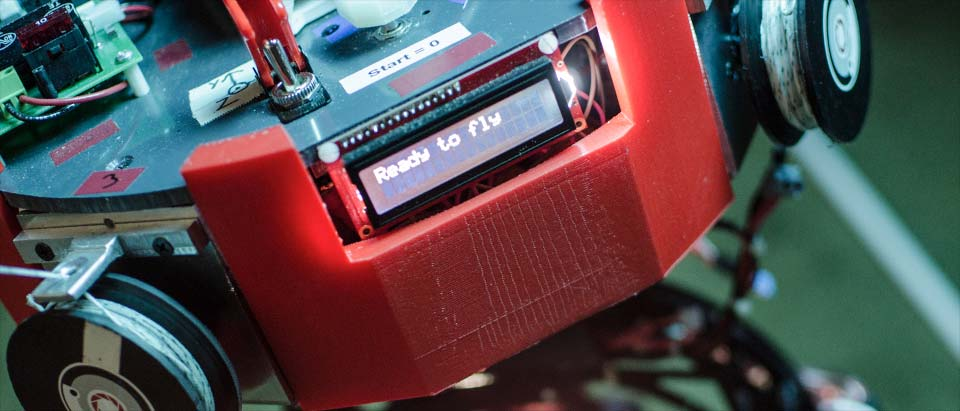
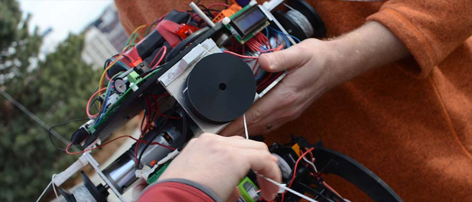
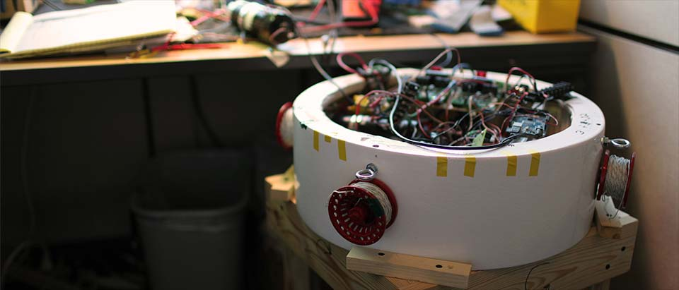
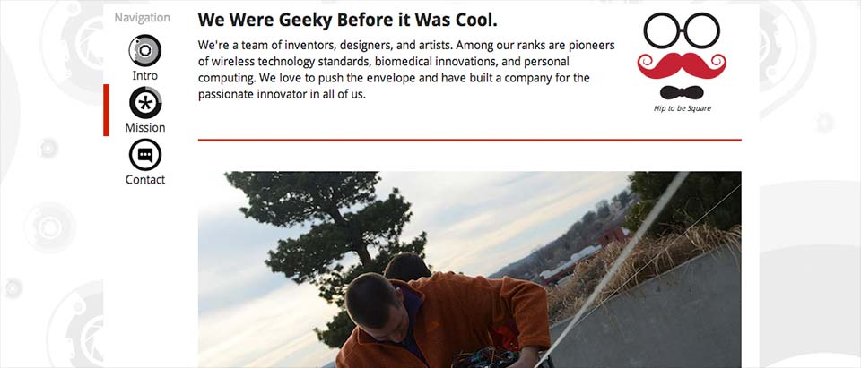
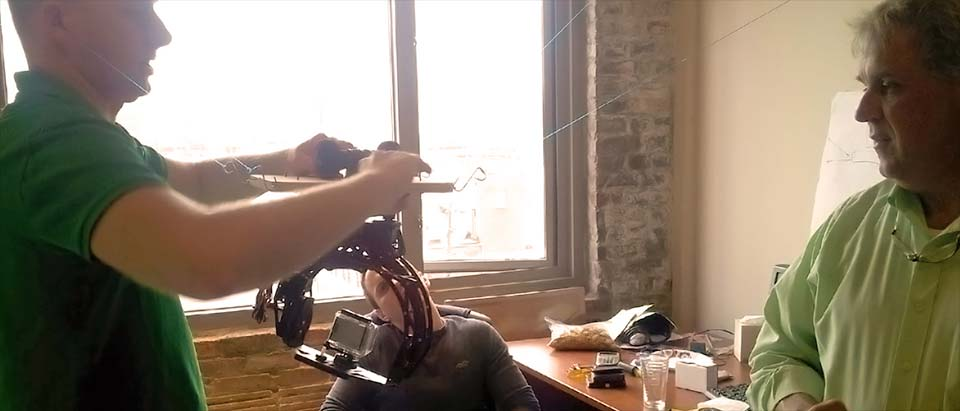
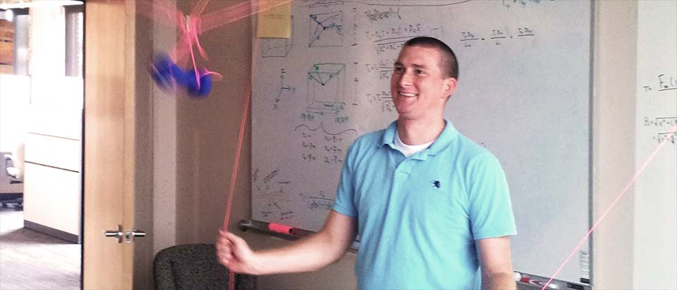
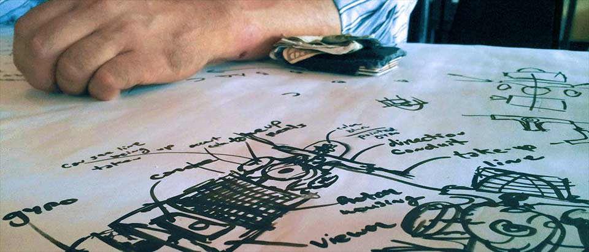

After flying under the radar for several months, we made our debut at 1 Million Cups, an initiative between the Kansas City startup community and the Kauffman Foundation.
We wanted to tell everybody about the new developments at CandyCam. With a few days of shooting and some help, we made this short "Pitch" video.
Fifth Development Model Created

Fourth Development Model Created

Business Plan Created in 3 Weeks
After countless Redbulls and three sleepless weeks, the entire team pulled together to create a new business plan in record time.
Third Development Model Created

Website v.1 Launched

"World Premier" Video Released
After spending months developing the first several prototypes, we wanted to show the world what we had been up to, so we created this short film.
Second Development Model Created

First Development Model Created

CandyCam is Incorporated
SkyHook Concept Conceived

We started as a group of friends trying to improve some camera equipment, but we quickly realized we had to create an entirely new solution. That's when we decided to build the SkyHook.